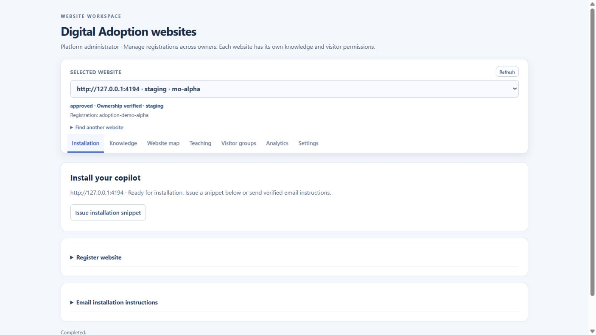
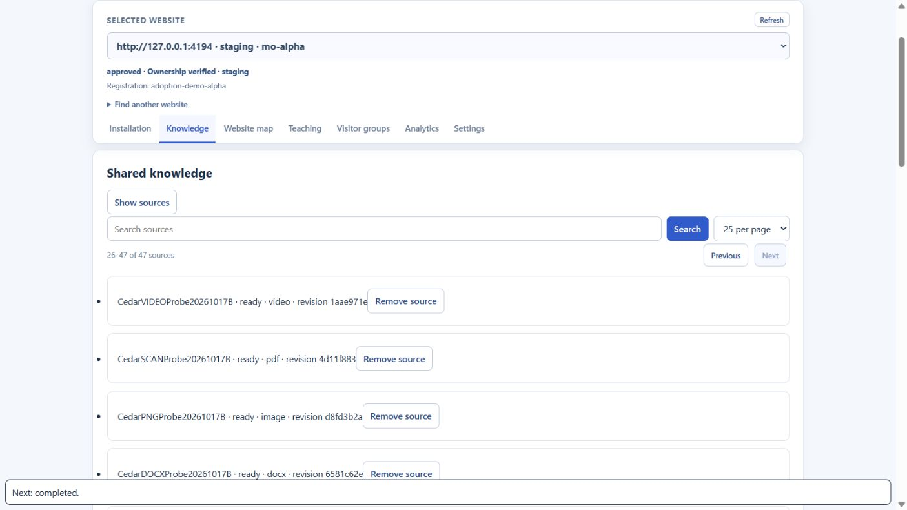
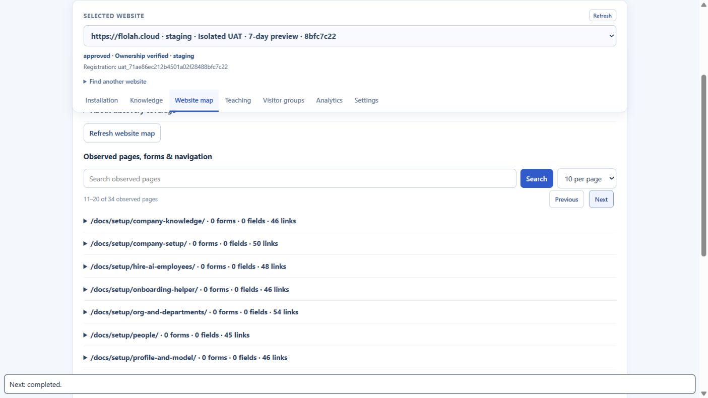
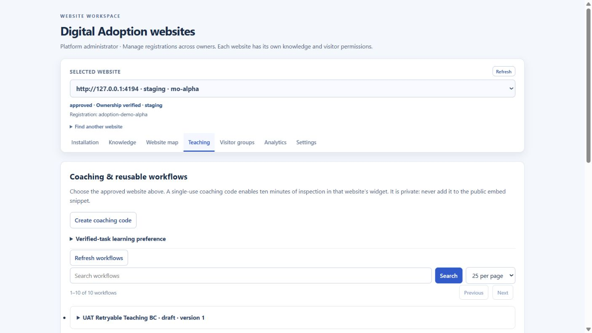
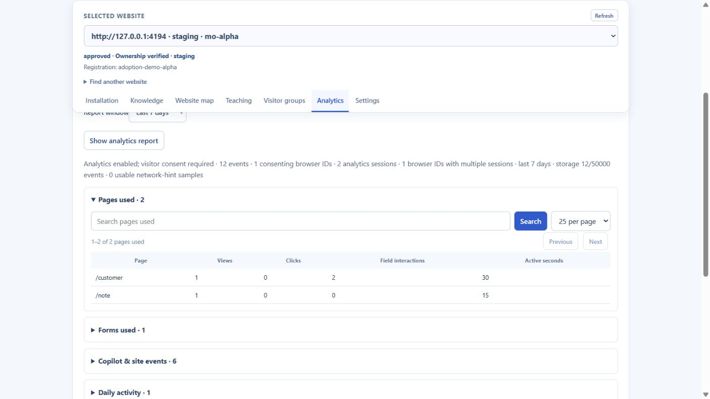
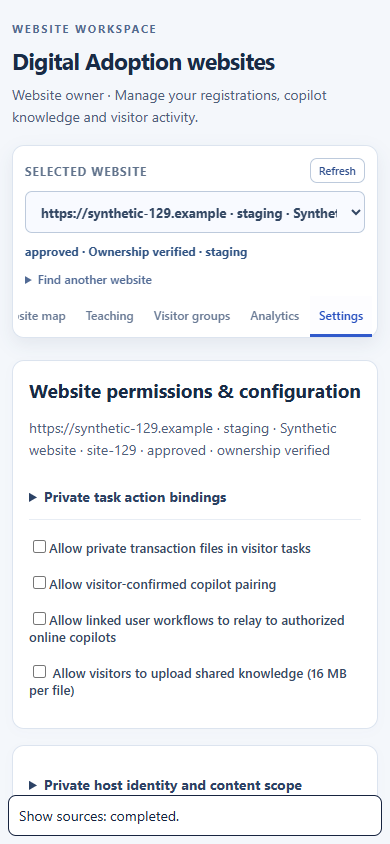

Incremental website-management usability/performance review. Not full Phase 1/2 certification. Read-only live administration of the loopback/public Flolah registrations; isolated test data is not a production seed.
15 passed · 1 partial · 0 failed review cases · 260 service checks pass locally and in the VPS C image.
Runtime C · Source/evidence D · 18 October 2026. Isolated VPS management benchmark: 25 websites / 25 clients / 500 requests, p95 115.84 ms, no failures. Excludes platform-auth, LLM and WAN latency.
CSV · Report JSON · VPS capacity · VPS tests
| Case | Feature | Status | Observed | Recommendation | Evidence |
|---|---|---|---|---|---|
| UI01_INITIAL_LAZY_LOAD | Persistent header and seven tabs; only websites load initially | passed | Passed in the isolated loopback 4194 browser using the actual owner-role UI and authenticated management handler. Synthetic data only. | Retain as a browser regression. | vps-installation.jpg |
| UI02_SOURCES_BEYOND_100_SEARCH_AND_PAGE_SIZE | Sources: search, page size, records past 100 | passed | Passed in the isolated loopback 4194 browser using the actual owner-role UI and authenticated management handler. Synthetic data only. | Retain as a browser regression. | knowledge-paginated.png |
| UI03_WORKFLOWS_PAGED_AND_MAPS_NOT_REFETCHED | Workflow paging; editors on expansion; saved learning preference | passed | Passed in the isolated loopback 4194 browser using the actual owner-role UI and authenticated management handler. Synthetic data only. | Retain as a browser regression. | vps-teaching.jpg |
| UI04_PAGE_AND_LAZY_FIELD_PAGINATION | Observed-page and lazy field/link pagination | passed | Passed in the isolated loopback 4194 browser using the actual owner-role UI and authenticated management handler. Synthetic data only. | Retain as a browser regression. | map-lazy-fields.png |
| UI05_ANALYTICS_DATASET_PAGINATION | Analytics datasets render and paginate on expansion | passed | Passed in the isolated loopback 4194 browser using the actual owner-role UI and authenticated management handler. Synthetic data only. | Retain as a browser regression. | vps-analytics.jpg |
| UI06_LATE_RESPONSE_CANNOT_CROSS_WEBSITES | Late response cannot cross website selection | passed | Passed in the isolated loopback 4194 browser using the actual owner-role UI and authenticated management handler. Synthetic data only. | Retain as a browser regression. | map-lazy-fields.png |
| UI07_WEBSITE_SEARCH_BEYOND_100_AND_REFRESH_CONTEXT | Find registrations past 100; refresh keeps website and tab | passed | Passed in the isolated loopback 4194 browser using the actual owner-role UI and authenticated management handler. Synthetic data only. | Retain as a browser regression. | installation-desktop.png |
| UI08_ERROR_AND_RETRY | Failed page provides a working retry | passed | Passed in the isolated loopback 4194 browser using the actual owner-role UI and authenticated management handler. Synthetic data only. | Retain as a browser regression. | knowledge-paginated.png |
| UI09_KEYBOARD_TABS_AND_MOBILE_REFLOW | Keyboard tabs and 390-pixel mobile reflow | passed | Passed in the isolated loopback 4194 browser using the actual owner-role UI and authenticated management handler. Synthetic data only. | Retain as a browser regression. | settings-mobile.png |
| UI10_CLEAR_OLD_SETTINGS_DURING_WEBSITE_SWITCH | Clear previous website settings while new selection loads | passed | Passed in the isolated loopback 4194 browser using the actual owner-role UI and authenticated management handler. Synthetic data only. | Retain as a browser regression. | vps-settings.jpg |
| API01 | Backend page boundaries, history, owner/audience isolation and trusted-actor limits | passed | Three added service cases cover 160 records, second/later pages, text/session/proof exclusion, token and version history, invalid inputs and actor spoofing. | Reassess offset/count costs for much larger histories; use cursor/shared storage before multiple API coordinators. | |
| REG01 | Full application regressions in local and exact VPS C image | passed | 260/260 in both environments; VPS isolated container limited to one CPU and 1 GiB. | Keep the exact-image test step for future releases. | |
| CAP01 | 25 websites / 25 clients / 500 management HTTP requests | passed | Final VPS fixture: 0 failures; 115.84 ms p95; 378.45 ms max; 3947-byte largest response; 118 MiB process RSS. Per-actor limits are retained separately from the shared-network ceiling. | Synthetic auth and loopback transport; excludes external auth, models, parsing, production WAN and long-duration traffic. These figures do not establish full copilot capacity. | |
| GOV01 | Analytics consent and owner pairing lifecycle through the tabbed UI | passed | Six isolated browser scenarios pass: analytics opt-in, private-value exclusion, group list, owner expiry extension, shortening/revocation and visitor analytics opt-out. | Production policies remain unchanged; keep synthetic lifecycle testing separate from real visitor analytics. | isolated-owner-group-expiry-updated.png isolated-owner-group-revoked.png |
| LIVE01 | Signed-in administrator uses all seven deployed tabs and switches domains | passed | Actual VPS: local registration 47 sources (25 + 22), 10 workflows, 7 observed pages, 2 saved groups; isolated public Flolah registration 34 observed pages with a successful 10-row page change. Settings clear on switch. No owner policy, publication or host record changed. | Review the public map page and local source page screenshots. Live existing indexes were read, not seeded for this test. | vps-installation.jpg vps-sources-page2.jpg vps-public-map-page2.jpg vps-map.jpg vps-teaching.jpg vps-groups.jpg vps-analytics.jpg vps-settings.jpg |
| AUTH01 | Fresh live email-owner sign-in on the final workspace | partial | The existing email-owner session expired. Its sign-in gate is displayed correctly. Live selected-site checks used the existing signed-in platform administrator; isolated owner-role UI and owner API regression tests pass. No new code/email was requested. | Complete fresh live email-owner re-entry when the owner next signs in. Existing Safari/iOS, Android and screen-reader deferrals, broad-agent coverage and local-checker timeout retain earlier status. | owner-session-expired.jpg |





